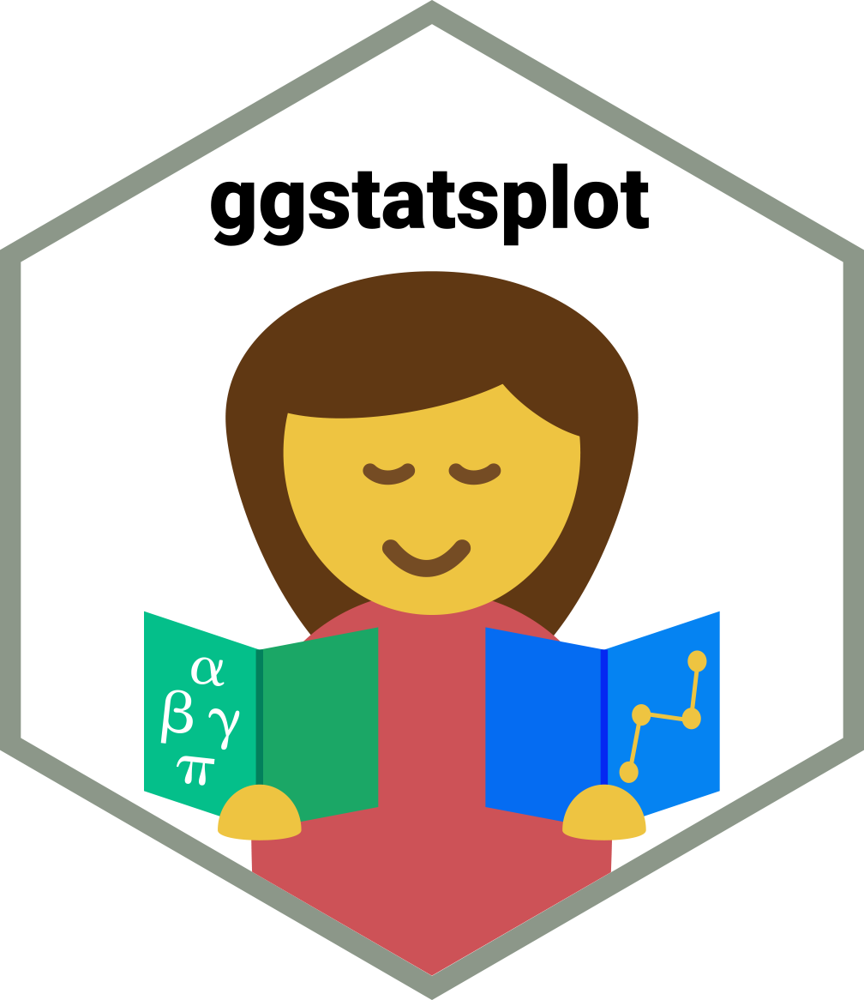
Hands-on Exercise 4b - Visual satistical analysis
4.1 Learning Outcome
In this hands-on exercise, we will learn how to use visual statistical analysis to combine charts and statistical test results in one output.
The focus is on the ggstatsplot package. Instead of producing a graph first and writing the statistical result separately, ggstatsplot places the key statistical information directly inside the chart. This makes the visual output more useful for interpretation because the reader can see both the pattern and the test result together.
By the end of this exercise, we will be able to:
- use
ggstatsplotto create statistical graphics, - understand the role of Bayes Factor in visual statistical analysis,
- perform a one-sample test using
gghistostats(), - compare two groups using
ggbetweenstats(), - compare more than two groups using one-way ANOVA,
- examine correlation using
ggscatterstats(), - test association between categorical variables using
ggbarstats().
4.2 Visual Statistical Analysis with ggstatsplot
ggstatsplot is an extension package for ggplot2. It creates information-rich statistical charts by combining visualisation with statistical test output.
This is useful because a normal chart may show a pattern, but it does not always explain whether the pattern is statistically meaningful. With ggstatsplot, the plot can include test statistics, p-values, confidence intervals, effect size, sample size, and Bayes Factor where relevant.
dir.create("img", showWarnings = FALSE)
img_urls <- c(
ggstatsplot_logo = "https://r4va.netlify.app/chap10/img/image1.jpg",
statistical_result = "https://r4va.netlify.app/chap10/img/image2.jpg",
bayes_formula = "https://r4va.netlify.app/chap10/img/image5.jpg",
bayes_table = "https://r4va.netlify.app/chap10/img/image6.jpg"
)
img_files <- file.path("img", paste0(names(img_urls), ".jpg"))
for (i in seq_along(img_urls)) {
if (!file.exists(img_files[i])) {
try(download.file(img_urls[i], img_files[i], mode = "wb", quiet = TRUE), silent = TRUE)
}
}
if (file.exists("img/ggstatsplot_logo.jpg")) {
knitr::include_graphics("img/ggstatsplot_logo.jpg")
}The main value of ggstatsplot is that it supports statistical reporting directly inside the plot. This makes the chart closer to an analytical output rather than only a visual summary.
TipWhat can we learn?
A statistical chart should not only look clean. It should also help the reader understand what test was used, what the result means, and whether the observed pattern is likely to be meaningful.
The example below shows the kind of statistical information that may be reported in a ggstatsplot visual.

if (file.exists("img/statistical_result.jpg")) {
knitr::include_graphics("img/statistical_result.jpg")
}The annotation in this example shows the important statistical components: parameter, test statistic, significance level, effect size, confidence interval, and sample size. In practice, these details help readers avoid making a judgement based only on visual appearance.
4.3 Getting Started
Before creating the statistical graphics, we need to load the required R packages and import the examination dataset.
4.3.1 Installing and launching R packages
In this exercise, ggstatsplot and tidyverse are the core packages. I also use knitr, DT, and scales for clearer output and presentation.
WarningWarning
Some ggstatsplot outputs can take longer to render because the package calculates statistical tests and builds annotated plots at the same time.
4.3.2 Importing data
The dataset used in this exercise is Exam_data.csv. It contains student ID, class, gender, race, and scores for English, Maths, and Science.
Rows: 322
Columns: 7
$ ID <chr> "Student321", "Student305", "Student289", "Student227", "Stude…
$ CLASS <fct> 3I, 3I, 3H, 3F, 3I, 3I, 3I, 3I, 3I, 3H, 3I, 3H, 3I, 3I, 3H, 3I…
$ GENDER <fct> Male, Female, Male, Male, Male, Female, Male, Male, Male, Male…
$ RACE <fct> Malay, Malay, Chinese, Chinese, Malay, Malay, Chinese, Malay, …
$ ENGLISH <dbl> 21, 24, 26, 27, 27, 31, 31, 31, 33, 34, 34, 36, 36, 36, 37, 38…
$ MATHS <dbl> 9, 22, 16, 77, 11, 16, 21, 18, 19, 49, 39, 35, 23, 36, 49, 30,…
$ SCIENCE <dbl> 15, 16, 16, 31, 25, 16, 25, 27, 15, 37, 42, 22, 32, 36, 35, 45…exam <- read_csv("Exam_data.csv") %>%
mutate(
CLASS = as.factor(CLASS),
GENDER = as.factor(GENDER),
RACE = as.factor(RACE)
)
glimpse(exam)The categorical variables are converted into factors. This is useful because the later statistical plots compare scores across groups such as gender and race.
4.3.3 Quick descriptive summary
Before doing formal statistical tests, it is useful to inspect the basic score patterns. This small summary gives the mean, median, standard deviation, minimum, and maximum for English, Maths, and Science.
score_summary <- exam %>%
summarise(
across(
c(ENGLISH, MATHS, SCIENCE),
list(
mean = ~mean(.x, na.rm = TRUE),
median = ~median(.x, na.rm = TRUE),
sd = ~sd(.x, na.rm = TRUE),
min = ~min(.x, na.rm = TRUE),
max = ~max(.x, na.rm = TRUE)
),
.names = "{.col}_{.fn}"
)
) %>%
pivot_longer(
everything(),
names_to = c("Subject", ".value"),
names_sep = "_"
)
DT::datatable(
score_summary,
rownames = FALSE,
class = "compact stripe hover",
options = list(pageLength = 5, dom = "t")
)
TipWhat can we learn?
This table gives a quick baseline before formal testing. If the mean and median are very different, it may suggest skewness. If the standard deviation is large, it suggests that student performance varies widely.
4.3.4 One-sample test: gghistostats() method
A one-sample test compares the sample mean or median with a chosen reference value. In this example, we examine whether English scores differ meaningfully from the reference score of 60.
gghistostats() combines a histogram with a statistical test result. This is useful because we can see both the distribution and the statistical conclusion in one figure.
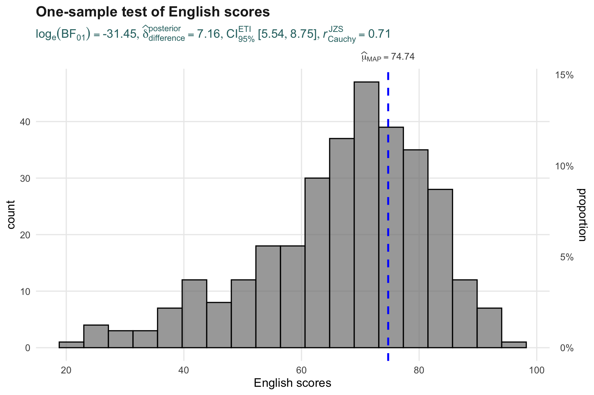
set.seed(1234)
gghistostats(
data = exam,
x = ENGLISH,
type = "bayes",
test.value = 60,
xlab = "English scores",
title = "One-sample test of English scores",
subtitle = "Reference value = 60",
results.subtitle = TRUE,
messages = FALSE
) +
scale_fill_manual(values = my_teal) +
scale_color_manual(values = my_dark) +
theme_yyThe histogram shows how English scores are distributed. The statistical annotation adds more information by testing the scores against the reference value. This makes the plot more analytical than a normal histogram.
TipWhat can we learn?
The key idea is not just whether many students scored above or below 60. The statistical test helps assess whether the observed score pattern provides meaningful evidence against the reference value.
4.3.5 Unpacking the Bayes Factor
A Bayes Factor compares the evidence for two competing hypotheses. In a common notation, B10 compares the evidence for the alternative hypothesis against the null hypothesis.
If B10 is large, the data supports the alternative hypothesis more strongly. If B10 is close to 1, the evidence is weak or inconclusive.

if (file.exists("img/bayes_formula.jpg")) {
knitr::include_graphics("img/bayes_formula.jpg")
}In simple terms, Bayes Factor asks: how much more likely is the observed data under one hypothesis compared with another?
This is different from a p-value. A p-value focuses on how unusual the data would be under the null hypothesis. A Bayes Factor compares the relative evidence between two hypotheses.
WarningImportant note
Bayes Factor should not be read mechanically. A larger value usually means stronger evidence, but the interpretation still depends on the research context, data quality, and whether the statistical assumptions are reasonable.
4.3.6 How to interpret Bayes Factor
The image below summarises a common interpretation guide for Bayes Factor. It gives a rough scale for describing whether the evidence is anecdotal, moderate, strong, very strong, or extreme.
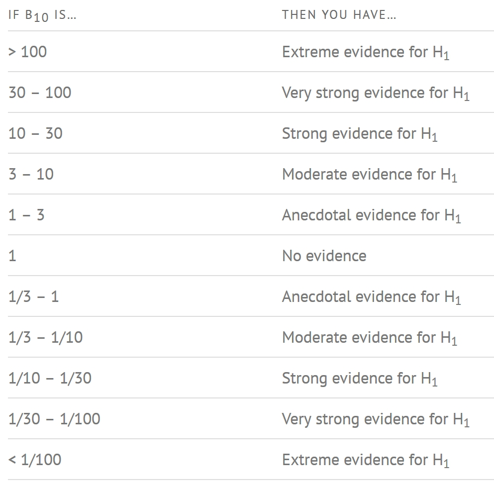
if (file.exists("img/bayes_table.jpg")) {
knitr::include_graphics("img/bayes_table.jpg")
}The table is useful as a guide, but it should not replace judgement. For example, a Bayes Factor may look strong, but if the sample is biased or the measurement is poor, the conclusion is still weak.
TipExtra interpretation
For coursework reporting, a safer sentence is: “The Bayes Factor suggests evidence in favour of the alternative hypothesis,” rather than saying “the hypothesis is proven.”
4.3.7 Two-sample mean test: ggbetweenstats()
A two-sample comparison is used when we want to compare a numerical variable across two groups. In this example, Maths scores are compared between male and female students.
The plot shows the distribution of scores for each gender, while the annotation reports the statistical comparison.
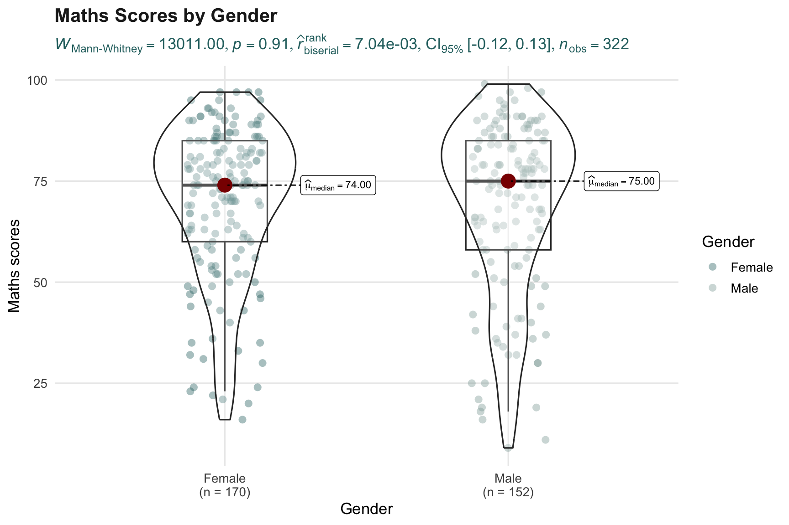
ggbetweenstats(
data = exam,
x = GENDER,
y = MATHS,
type = "np",
title = "Maths Scores by Gender",
xlab = "Gender",
ylab = "Maths scores",
results.subtitle = TRUE,
messages = FALSE
) +
scale_color_manual(values = c(my_teal, my_soft_teal)) +
scale_fill_manual(values = c(my_light_teal, my_soft_teal)) +
theme_yyThe non-parametric test is used here because it does not rely as strongly on normality assumptions. This is useful for score data, where the distribution may be skewed or uneven across groups.
TipWhat can we learn?
This plot allows us to compare group-level score patterns visually before reading the test result. The statistical output then tells us whether the observed difference is likely to be meaningful.
4.3.8 Extra check: score distribution by gender
As a small additional check, the chart below shows the distribution of Maths scores by gender using a simpler boxplot. This does not replace the ggstatsplot test. It gives a cleaner visual summary before interpreting the full statistical chart.
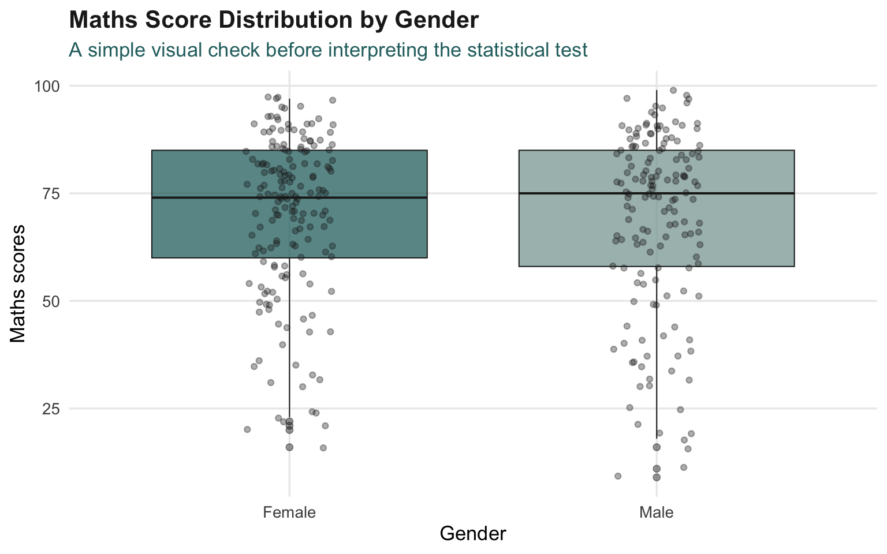
ggplot(exam,
aes(x = GENDER,
y = MATHS,
fill = GENDER)) +
geom_boxplot(alpha = 0.75,
color = my_dark,
linewidth = 0.35,
outlier.alpha = 0.45) +
geom_jitter(width = 0.12,
alpha = 0.35,
size = 1.4,
color = my_dark) +
scale_fill_manual(values = c(my_teal, my_soft_teal)) +
labs(title = "Maths Score Distribution by Gender",
subtitle = "A simple visual check before interpreting the statistical test",
x = "Gender",
y = "Maths scores") +
theme_yy +
theme(legend.position = "none")This extra chart helps us see the spread and outliers more clearly. It is deliberately simple so that it supports the statistical plot rather than distracting from it.
4.3.9 One-way ANOVA test: ggbetweenstats() method
A one-way ANOVA is used when a numerical variable is compared across more than two groups. In this example, English scores are compared across racial groups.
The function is still ggbetweenstats(), but now the grouping variable has more than two categories.
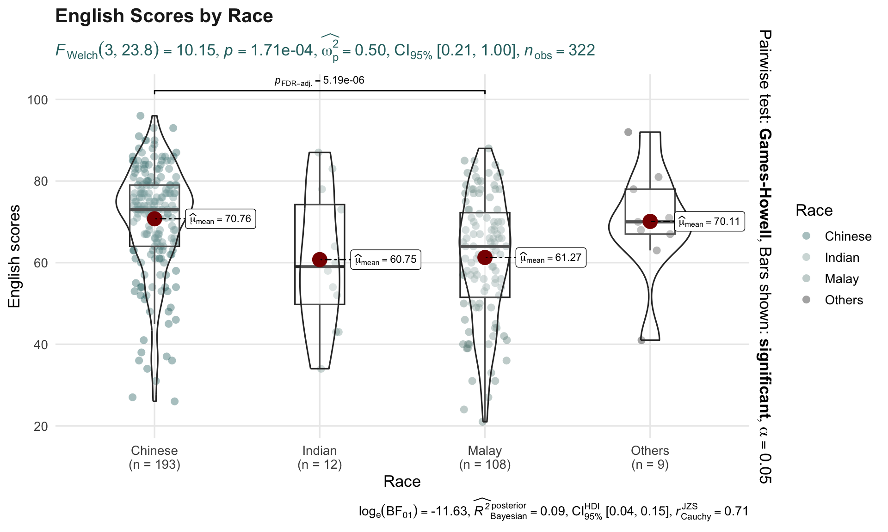
ggbetweenstats(
data = exam,
x = RACE,
y = ENGLISH,
type = "p",
mean.ci = TRUE,
pairwise.comparisons = TRUE,
pairwise.display = "s",
p.adjust.method = "fdr",
title = "English Scores by Race",
xlab = "Race",
ylab = "English scores",
results.subtitle = TRUE,
messages = FALSE
) +
scale_color_manual(values = c(my_teal, my_soft_teal, "#6F8F8C", "#1F1F1F")) +
scale_fill_manual(values = c(my_light_teal, my_soft_teal, "#BFD6D3", "#E6E6E6")) +
theme_yyThe pairwise comparison setting is useful because the overall test may tell us that at least one group differs, but it does not automatically tell us which specific groups are different.
The argument pairwise.display = "s" only shows significant pairwise comparisons. This keeps the plot less cluttered.
TipPairwise display options
"ns" shows only non-significant comparisons.
"s" shows only significant comparisons.
"all" shows all pairwise comparisons.
For a clean report, "s" is often easier to read because it highlights only the important group differences.
4.3.10 Summary of group differences
The chart below is an additional compact summary. It shows the average English score by race with standard error bars.
This is not a replacement for ANOVA. It is a supporting chart that makes the group-level pattern easier to see.
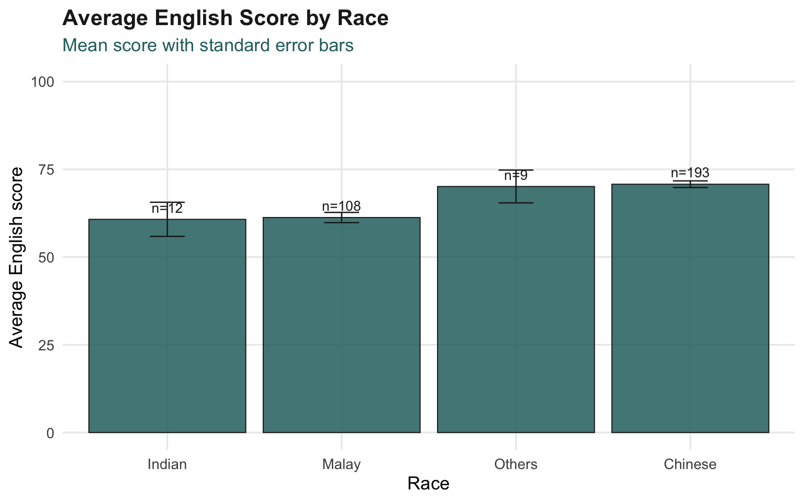
race_summary <- exam %>%
group_by(RACE) %>%
summarise(
mean_english = mean(ENGLISH, na.rm = TRUE),
se_english = sd(ENGLISH, na.rm = TRUE) / sqrt(n()),
n = n(),
.groups = "drop"
)
ggplot(race_summary,
aes(x = reorder(RACE, mean_english),
y = mean_english)) +
geom_col(fill = my_teal,
color = my_dark,
linewidth = 0.35,
alpha = 0.85) +
geom_errorbar(aes(ymin = mean_english - se_english,
ymax = mean_english + se_english),
width = 0.2,
linewidth = 0.45,
color = my_dark) +
geom_text(aes(label = paste0("n=", n)),
vjust = -0.7,
size = 3.5,
color = my_dark) +
coord_cartesian(ylim = c(0, 100)) +
labs(title = "Average English Score by Race",
subtitle = "Mean score with standard error bars",
x = "Race",
y = "Average English score") +
theme_yy
WarningInterpretation warning
A bar chart of means can hide the spread of individual scores. That is why this chart should be read together with the full ggbetweenstats() plot.
4.3.11 Significant test of correlation: ggscatterstats()
Correlation analysis examines the relationship between two numerical variables. In this example, we test the relationship between Maths scores and English scores.
ggscatterstats() produces a scatter plot together with statistical information about the strength and significance of the relationship.
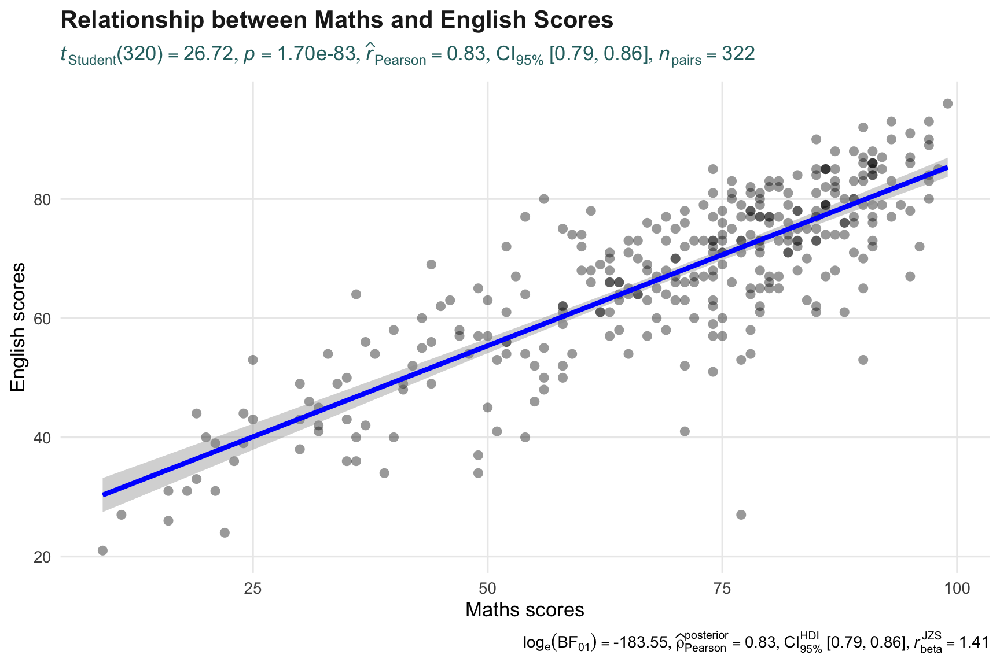
ggscatterstats(
data = exam,
x = MATHS,
y = ENGLISH,
marginal = FALSE,
title = "Relationship between Maths and English Scores",
xlab = "Maths scores",
ylab = "English scores",
results.subtitle = TRUE,
messages = FALSE
) +
theme_yyIf the points form an upward pattern, it suggests that students who score higher in Maths also tend to score higher in English. The statistical annotation helps us judge whether this relationship is strong enough to report.
TipWhat can we learn?
Correlation does not mean causation. A positive relationship between Maths and English scores does not prove that one subject causes improvement in the other. It only shows that the two variables tend to move together.
4.3.12 Extra view: correlation with a simple regression line
The next chart is a simplified version of the correlation plot. It keeps the focus on the visual pattern by adding a fitted linear trend line.
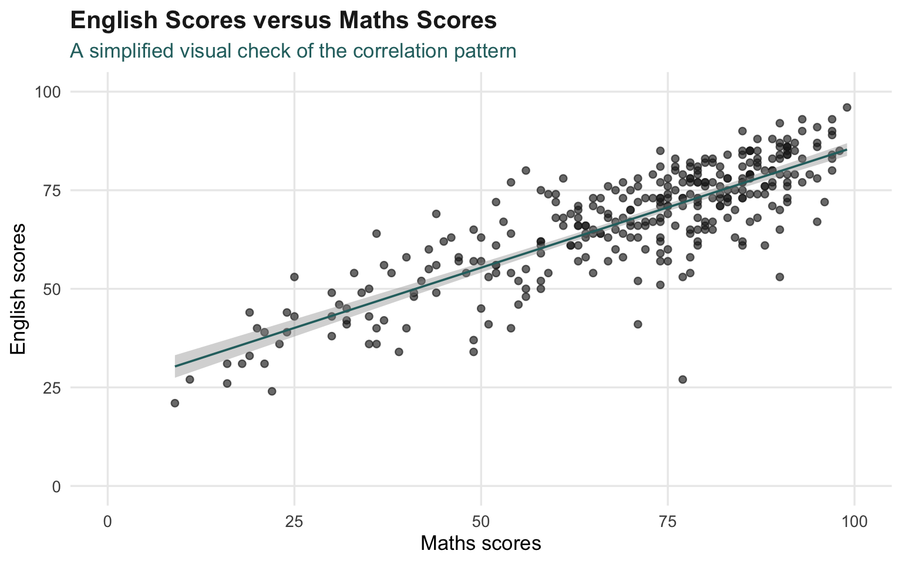
ggplot(exam,
aes(x = MATHS,
y = ENGLISH)) +
geom_point(color = my_dark,
alpha = 0.65,
size = 1.8) +
geom_smooth(method = "lm",
se = TRUE,
color = my_teal,
linewidth = 0.65) +
coord_cartesian(xlim = c(0, 100),
ylim = c(0, 100)) +
labs(title = "English Scores versus Maths Scores",
subtitle = "A simplified visual check of the correlation pattern",
x = "Maths scores",
y = "English scores") +
theme_yyThis extra plot is useful because it is visually cleaner than the full statistical plot. The full ggscatterstats() plot should still be used for formal interpretation.
4.3.13 Significant test of association: ggbarstats() method
The final method is used for categorical association. First, Maths scores are converted into score bands using cut(). Then, ggbarstats() is used to test whether Maths score band is associated with gender.
# A tibble: 8 × 3
MATHS_bins GENDER n
<fct> <fct> <int>
1 0-60 Female 44
2 0-60 Male 43
3 61-75 Female 48
4 61-75 Male 36
5 76-85 Female 42
6 76-85 Male 37
7 86-100 Female 36
8 86-100 Male 36exam1 <- exam %>%
mutate(
MATHS_bins = cut(
MATHS,
breaks = c(0, 60, 75, 85, 100),
include.lowest = TRUE,
labels = c("0-60", "61-75", "76-85", "86-100")
)
)
exam1 %>%
count(MATHS_bins, GENDER) %>%
arrange(MATHS_bins, GENDER)The score bands simplify Maths scores into ordered categories. This allows us to test whether the distribution of score bands differs by gender.
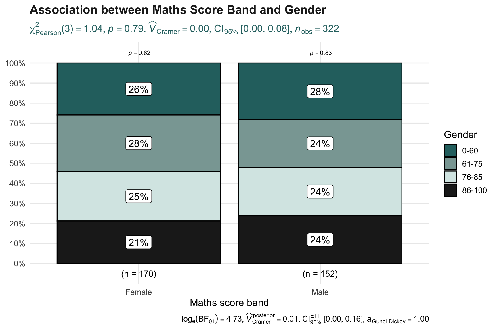
ggbarstats(
data = exam1,
x = MATHS_bins,
y = GENDER,
title = "Association between Maths Score Band and Gender",
xlab = "Maths score band",
legend.title = "Gender",
results.subtitle = TRUE,
messages = FALSE
) +
scale_fill_manual(values = c(my_teal, my_soft_teal)) +
theme_yyThis plot helps us examine whether gender composition changes across Maths score bands. If the proportions are similar across all bands, the association is weak. If the proportions vary strongly across bands, the association may be more meaningful.
TipWhat can we learn?
ggbarstats() is useful when both variables are categorical. Here, Maths is first converted from a numerical score into categories, so it can be analysed together with gender.
4.3.14 Extra view: proportion chart
The chart below shows the same idea in a simpler proportion format. It helps readers focus on the share of gender within each Maths score band.
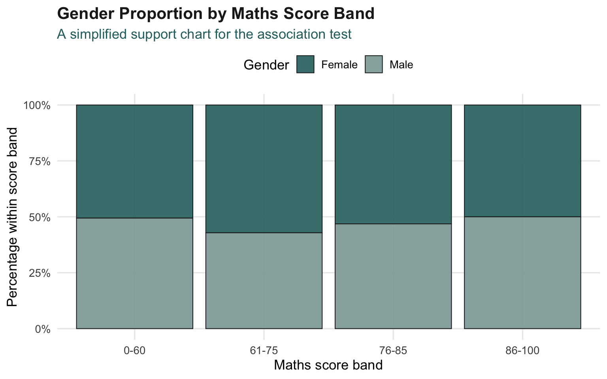
exam1 %>%
count(MATHS_bins, GENDER) %>%
group_by(MATHS_bins) %>%
mutate(prop = n / sum(n)) %>%
ggplot(aes(x = MATHS_bins,
y = prop,
fill = GENDER)) +
geom_col(color = my_dark,
linewidth = 0.35,
alpha = 0.9) +
scale_y_continuous(labels = percent_format()) +
scale_fill_manual(values = c(my_teal, my_soft_teal)) +
labs(title = "Gender Proportion by Maths Score Band",
subtitle = "A simplified support chart for the association test",
x = "Maths score band",
y = "Percentage within score band",
fill = "Gender") +
theme_yy +
theme(legend.position = "top")This additional chart is easier to read than a raw count chart because each score band is normalised to 100%. It helps prevent larger groups from dominating the visual interpretation.
4.4 Final Interpretation
Visual statistical analysis is useful because it reduces the gap between plotting and statistical testing. Instead of creating a chart in one step and running a test in another, ggstatsplot allows the visual and statistical outputs to appear together.
The main idea is simple:
- use
gghistostats()for one-sample distribution-based testing, - use
ggbetweenstats()for comparing groups, - use
ggscatterstats()for testing relationships between numerical variables, - use
ggbarstats()for testing association between categorical variables.
WarningReporting warning
A plot with statistical results is still not a complete analysis by itself. The researcher must still explain the research question, check whether the test is appropriate, and interpret the result in context.
TipFinal takeaway
ggstatsplot is useful when we want charts to carry statistical meaning. The best use case is not decorative plotting, but evidence-based visual reporting.
4.5 Reference
The main package used in this exercise is ggstatsplot, supported by ggplot2 and tidyverse.
Useful functions from this exercise:
gghistostats()for one-sample tests,ggbetweenstats()for two-group and multi-group comparisons,ggscatterstats()for correlation analysis,ggbarstats()for association tests,cut()for converting numerical scores into categorical bands,summarise()andacross()for quick descriptive summaries.